Vos paiements au rythme de votre calendrier.
Planifiez vos factures et abonnements, définissez des rappels et gardez une vue mensuelle claire. Vos données restent sur votre appareil.
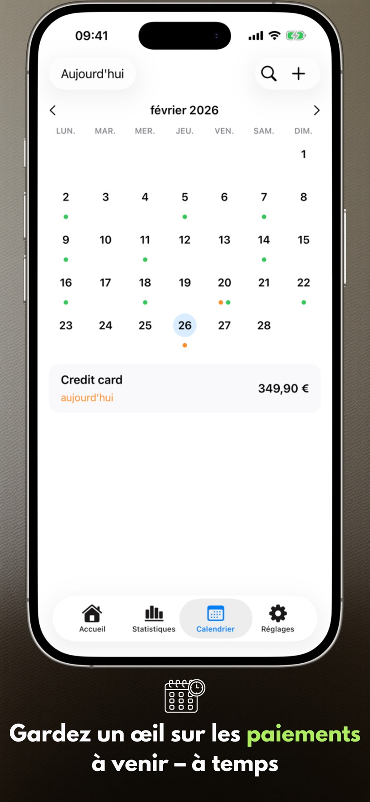
Nouveautés de la version 2.3.1
- Les widgets fonctionnent de manière plus fiable.
- La liste des paiements s’affiche correctement sur Mac.
Écrans de l'app
Six écrans clés sur iPhone et iPad qui montrent le rythme de planification avec Payment Calendar.
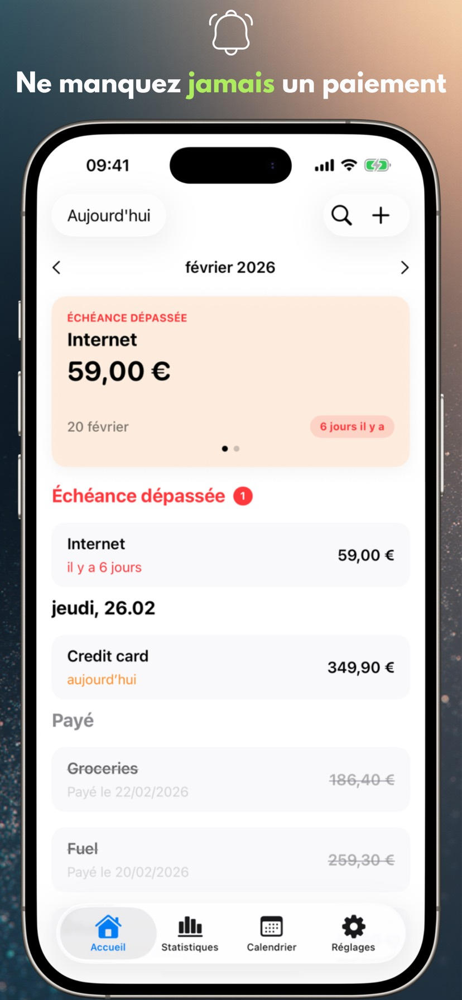
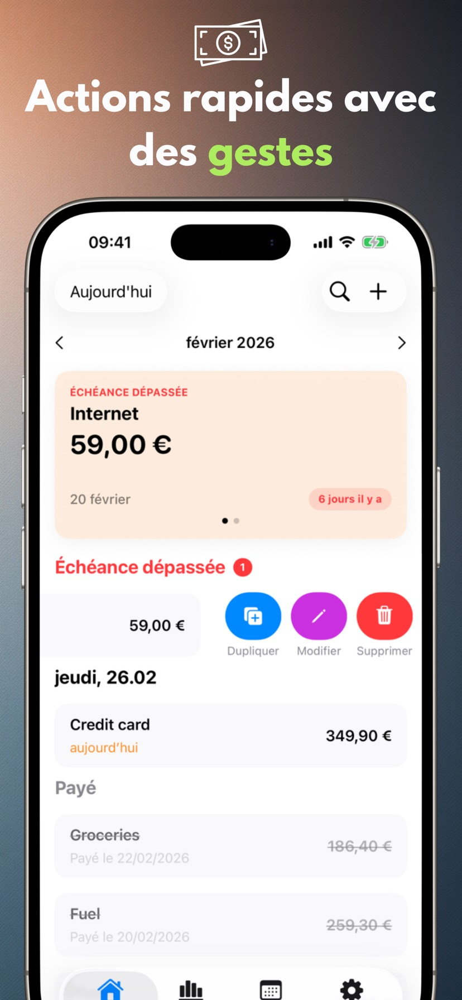
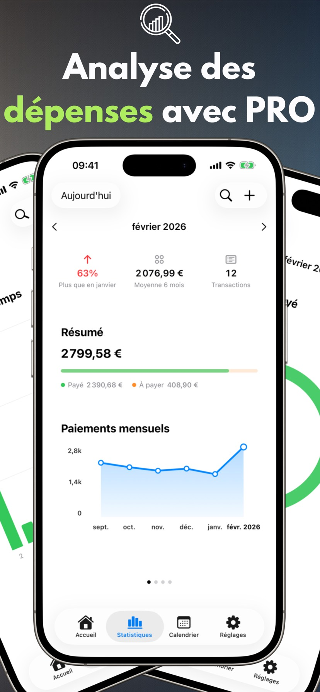
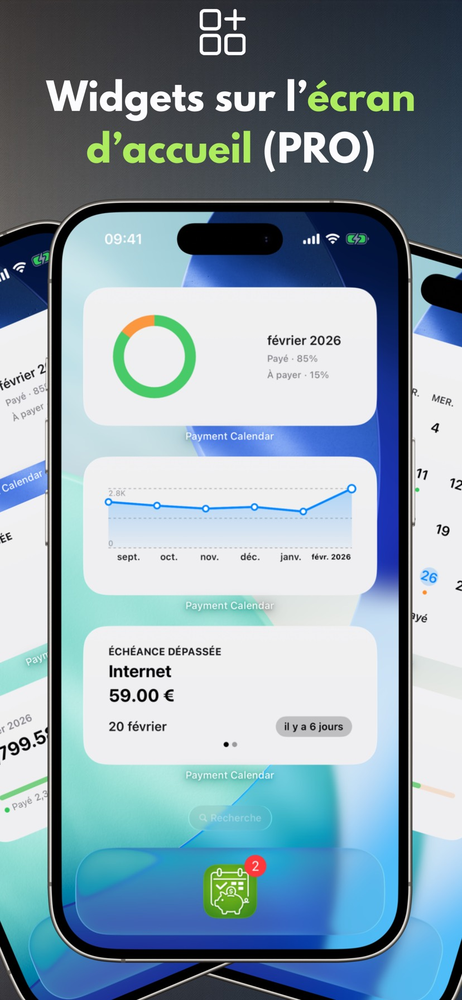
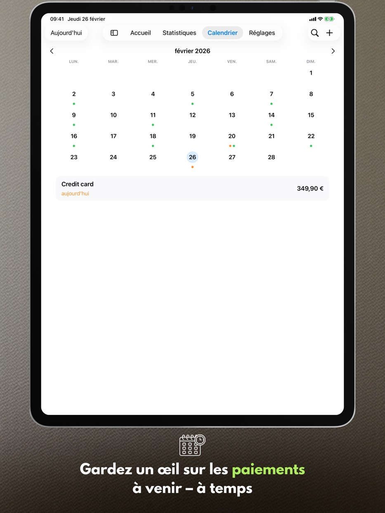
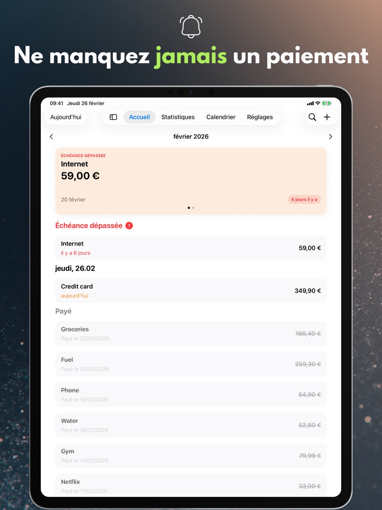
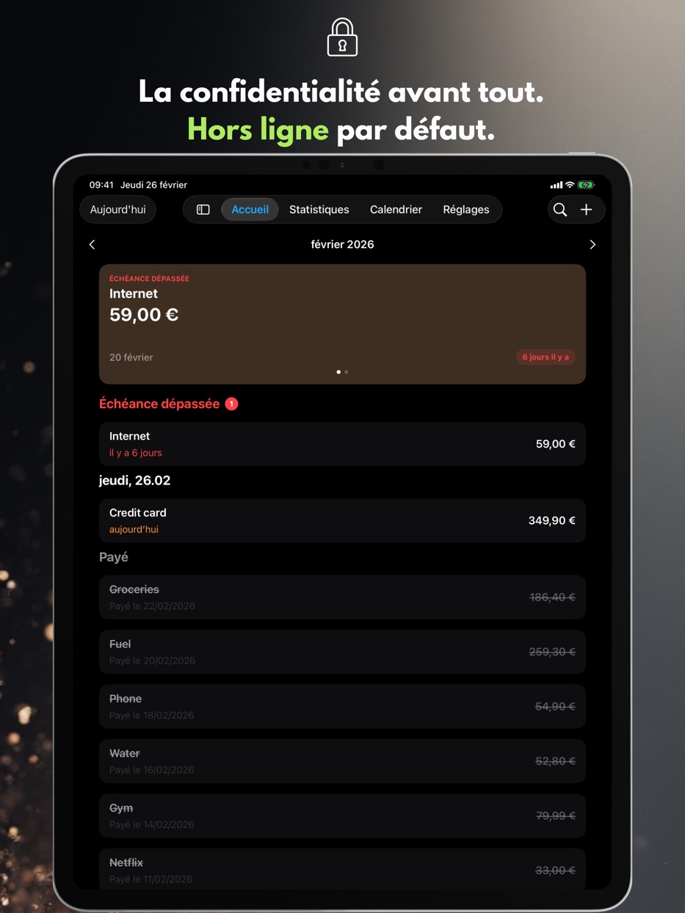
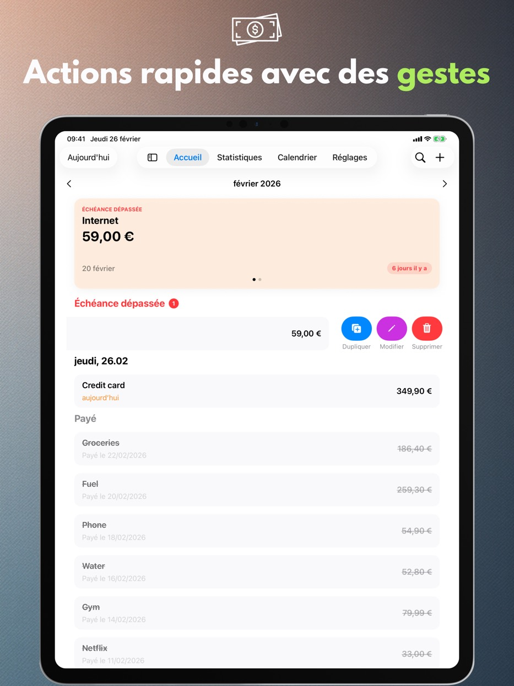
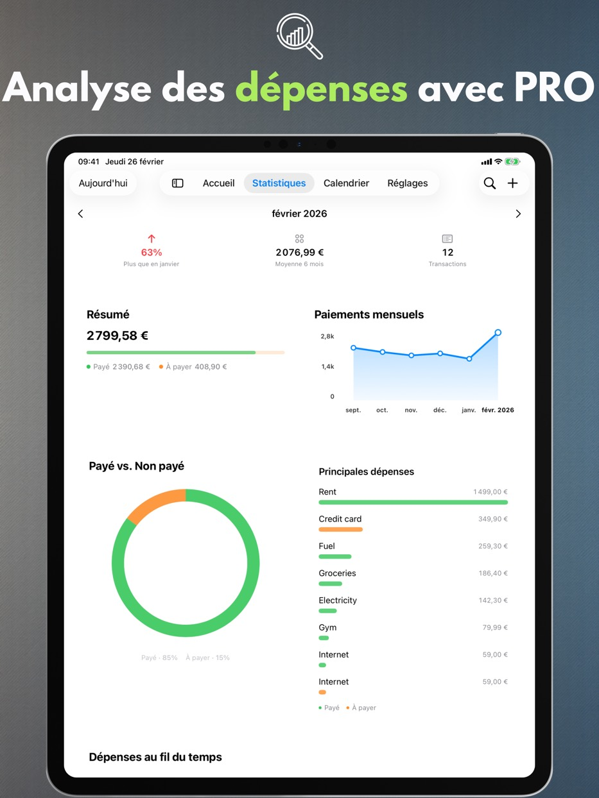
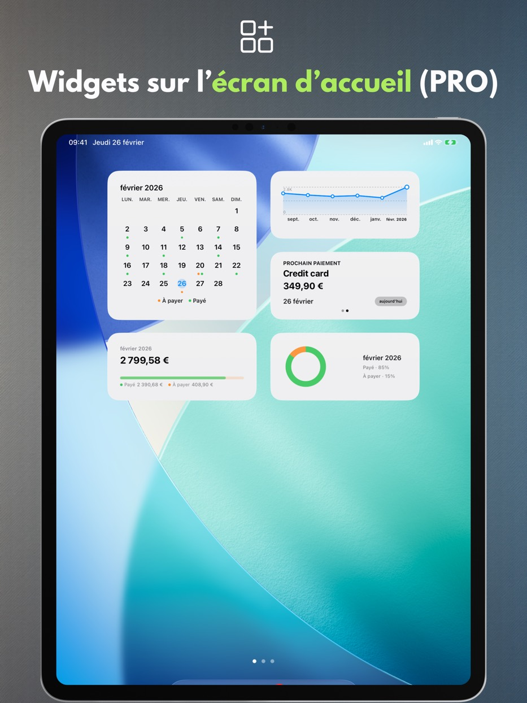
Fonctionnalités de l'app
Tout ce qui suit fonctionne gratuitement et sans compte : une vue mensuelle claire, une saisie rapide des paiements et des rappels pour planifier vos dépenses sereinement.
Calendrier de paiement
Visualisez les échéances à venir et votre liste de paiements en un seul endroit.
Rappels
Recevez une notification le jour de l'échéance ou quelques jours avant.
Gestes et actions rapides
Marquez comme payé, modifiez ou dupliquez d'un simple balayage.
Recherche
Trouvez des paiements par nom, montant ou notes.
Paramètres personnalisés
Devise, début de semaine, design et une disposition qui vous convient.
Prise en charge de l'iPad
Mode fenêtre et Split View, ainsi que clavier et raccourcis clavier.
Corbeille
Les paiements supprimés restent 30 jours dans la Corbeille — vous pouvez les restaurer.
Accessibilité
L'app suit la taille de texte du système, respecte « Réduire les animations » et n'indique jamais l'état d'un paiement par la seule couleur.
Confidentialité
Vos données restent sur votre appareil.
Payment Calendar ne nécessite aucun compte et ne suit pas vos activités. La synchronisation iCloud est optionnelle et désactivée par défaut.
Aucune publicité, aucune analyse
Nous n'utilisons aucun SDK tiers pour l'analyse ou la publicité.
Contrôle des données
Supprimez vos données à tout moment dans l'application ou en la désinstallant.
Fonctionnalités PRO
Une extension payante : statistiques, widgets, paiements récurrents, synchronisation et export. Au choix : abonnement mensuel, annuel ou achat unique à vie.
Statistiques et tendances
Résumés mensuels plus vue des tendances sur 6 mois.
Widgets
Quatre widgets pour l'écran d'accueil : prochain paiement, résumé du mois, tendance et grille du mois.
Paiements récurrents
Créez automatiquement des paiements récurrents.
Synchronisation iCloud
Gardez les données synchronisées sur vos appareils si activé.
Export CSV/PDF
Partagez des résumés ou archivez vos données.
Langues disponibles
Payment Calendar prend en charge le polonais, l'anglais, l'espagnol, l'allemand, le français, l'italien, l'ukrainien, le suédois, le chinois simplifié, le japonais et le portugais (Brésil).
Questions fréquentes (FAQ)
Consultez des réponses rapides aux questions les plus fréquentes sur Payment Calendar.
Avant de télécharger
Comment ne pas oublier de payer une facture ?
Payment Calendar affiche tous les paiements à venir dans la vue mensuelle et envoie des rappels avant l'échéance, afin que vous sachiez à l'avance ce qu'il faut payer et quand.
Comment suivre ses abonnements pour ne pas payer pour des services inutiles ?
Ajoutez vos abonnements comme paiements récurrents (fonctionnalité PRO) — l'application vous rappelle automatiquement chaque renouvellement, ce qui facilite le repérage et l'annulation de ceux que vous n'utilisez plus.
Existe-t-il une application comme un calendrier, mais pour les factures et paiements ?
Oui, c'est exactement le principe de Payment Calendar — la vue mensuelle affiche des paiements au lieu d'événements, avec une indication claire de ce qui est payé et de ce qui reste à échéance.
Comment gérer ses paiements sans créer de compte ?
Payment Calendar ne nécessite ni inscription ni connexion — vous installez l'application et ajoutez vos paiements immédiatement. Les données restent localement sur l'appareil, sauf si vous activez vous-même la synchronisation iCloud optionnelle.
En quoi Payment Calendar diffère-t-il d'un calendrier classique sur votre téléphone ?
Un calendrier classique affiche des événements, pas des paiements — il n'y a ni statut « payé / à payer », ni rappels adaptés aux factures, ni aperçu de vos dépenses. Payment Calendar est conçu spécifiquement pour les paiements : avec montants, devises, récurrence et statistiques sur ce que vous dépensez réellement chaque mois.
L'essentiel
Qu’est-ce que l’application Payment Calendar ?
Payment Calendar est une application pour iPhone et iPad (iOS/iPadOS) qui permet de suivre les factures et les paiements à venir sous forme de calendrier. Elle permet de voir rapidement ce qui est dû et de marquer les paiements comme réglés.
L’application fonctionne-t-elle hors ligne ?
Oui. L’application fonctionne hors ligne et ne nécessite ni compte ni connexion Internet. Les données sont stockées localement sur l’appareil. La synchronisation iCloud optionnelle (dans la version PRO) permet un accès sur plusieurs appareils Apple.
Sur quels appareils Payment Calendar fonctionne-t-il ?
L'app fonctionne sur iPhone et iPad avec iOS/iPadOS 18.0 ou version ultérieure. Vous pouvez aussi l'installer sur un Mac équipé d'une puce Apple : elle y fonctionne comme une app iPad (« Designed for iPad »), et non comme une version macOS distincte.
Confidentialité et données
Mes données financières sont-elles sécurisées ?
Oui. Payment Calendar ne collecte pas de données utilisateur et ne nécessite pas de connexion. Vos données restent sur votre appareil, et la synchronisation iCloud optionnelle (dans la version PRO) se fait dans l’écosystème Apple.
Payment Calendar se connecte-t-il à mon compte bancaire ?
Non. Payment Calendar ne se connecte à aucune banque et ne récupère aucune transaction automatiquement — vous ajoutez vos paiements manuellement. C'est un choix délibéré : l'application privilégie la confidentialité dès sa conception et n'a pas besoin d'accéder à votre compte bancaire pour fonctionner.
Fonctionnalités
Puis-je ajouter des paiements récurrents et des abonnements ?
Oui. Vous pouvez ajouter des paiements récurrents, comme des abonnements et des factures mensuelles. Cette fonctionnalité est disponible dans la version PRO.
L’application envoie-t-elle des rappels pour les paiements à venir ?
Oui. Vous pouvez configurer des rappels pour ne manquer aucun paiement.
Quelles devises Payment Calendar prend-il en charge ?
L'app prend en charge 22 devises, dont le dollar américain, l'euro, la livre, le franc suisse, les couronnes tchèque, suédoise, norvégienne et danoise, le forint, la hryvnia, le yen, le yuan, le réal, ainsi que le peso colombien, le tugrik mongol, le peso mexicain, le peso chilien et le dollar néo-zélandais. Le formatage (symboles, séparateurs, arrondis) s'adapte automatiquement à la région de votre appareil.
Puis-je exporter mes paiements ?
Oui, dans la version PRO. Vous pouvez exporter vos données au format CSV ou PDF, par exemple pour un rapport ou une archive.
Puis-je corriger la date de paiement réelle ?
Oui. Le formulaire de modification d'un paiement réglé comporte un champ « Payé le », qui vous permet de renseigner la date de paiement réelle. Les statistiques continuent de regrouper les paiements par échéance, et non par date de paiement.
Y a-t-il un widget pour l'écran d'accueil ?
Oui, dans la version PRO. Quatre widgets sont proposés pour l'écran d'accueil : prochain paiement, résumé du mois, tendance des dépenses et grille du mois — tous sans ouvrir l'app.
J'ai supprimé un paiement par erreur — puis-je le récupérer ?
Oui. Les paiements supprimés vont dans la Corbeille et y restent 30 jours. La Corbeille se trouve dans les Réglages, et restaurer une entrée ne demande qu'une touche.
Payment Calendar est-elle une application de gestion de budget familial ?
Non. C’est un calendrier de factures qui aide à suivre les paiements à venir et déjà réglés. L’application ne gère ni revenus, ni soldes de compte, ni budget.
Synchronisation et langues
Les données se synchronisent-elles entre iPhone et iPad ?
Oui, si vous activez la synchronisation iCloud optionnelle (fonctionnalité PRO) — vos paiements sont alors accessibles sur tous les appareils Apple connectés au même compte iCloud. Sans cette option, les données restent localement sur un seul appareil.
Dans quelles langues l'application est-elle disponible ?
Payment Calendar est disponible en 11 langues : polonais, anglais, espagnol, allemand, français, italien, ukrainien, suédois, chinois simplifié, japonais et portugais (Brésil).
Plateformes
Payment Calendar est-il disponible sur Android ?
Non. Payment Calendar est une app pour iPhone et iPad (iOS/iPadOS) ; sur les Mac équipés d'une puce Apple, elle fonctionne en mode « Designed for iPad ». Il n'existe pas de version Android.
Existe-t-il une version pour Apple Watch ?
Pas encore, mais la prise en charge de watchOS fait partie des évolutions prévues pour l'application.
Tarif et PRO
Puis-je utiliser l’application sans abonnement payant ?
Oui. Les fonctionnalités de base sont gratuites. Les fonctionnalités PRO, comme les paiements récurrents et la synchronisation iCloud, nécessitent un abonnement ou un achat unique.
Quel est le prix de la version PRO et puis-je annuler mon abonnement ?
Le prix varie selon la région et est indiqué dans l'application ainsi que sur l'App Store. Vous avez le choix entre un abonnement mensuel, annuel ou un achat unique à vie (Lifetime). Vous gérez et annulez votre abonnement dans les réglages de votre identifiant Apple, comme tout autre abonnement de l'App Store.
Assistance
Il manque une devise ou j'ai une idée de fonctionnalité — que puis-je faire ?
Écrivez-moi à payment_calendar@icloud.com. Je lis et je réponds personnellement à chaque e-mail — les suggestions et idées des utilisateurs se retrouvent réellement dans les prochaines versions.
Prêt pour une planification de paiements plus sereine ?
Payment Calendar garde chaque échéance à l'œil.